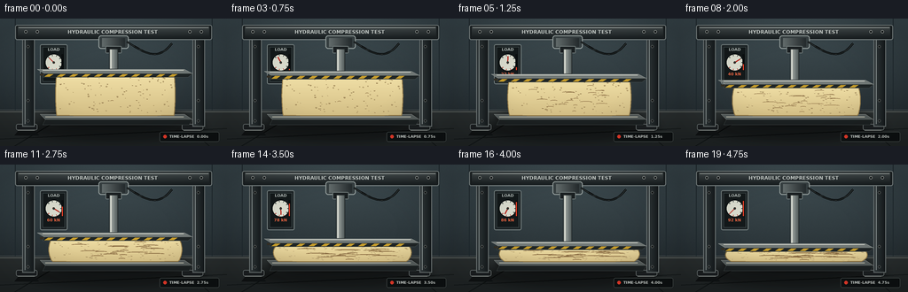
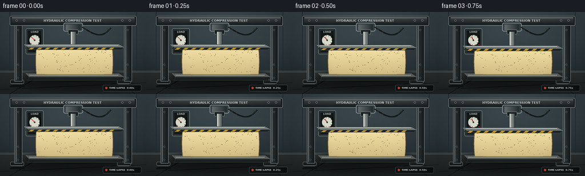

CODING AGENTS AS PIXEL WORLD MODELS
traex/GPT-5.6-Sol · mechanics_0021
点击播放 · 原生 RGB 像素
逐轮保存的候选
回放视频、检查图与代码变化。
每份候选均可单独播放。实际图片检查记录在下方工具轨迹中。
候选 01播放与检查图
点击播放 · 原生 RGB 像素


展开代码变化
--- 上一保存版本
+++ 本次保存版本
@@ -0,0 +1,270 @@
+from pathlib import Path
+import math
+import numpy as np
+from PIL import Image, ImageDraw, ImageFont, ImageFilter
+import artifact_io
+
+CASE_DIR = Path(__file__).resolve().parent
+W, H, N = 256, 144, 20
+S = 4
+rng = np.random.default_rng(21)
+
+# Stable foam texture locations in normalized front-face coordinates.
+pores = []
+for _ in range(92):
+ pores.append((rng.uniform(0.025, .975), rng.uniform(.08, .94), rng.uniform(.38, 1.05), rng.uniform(.5, 1.0)))
+wrinkles = [(rng.uniform(.06, .78), rng.uniform(.12, .91), rng.uniform(.05, .17)) for _ in range(22)]
+
+FONT_PATH = "/usr/share/fonts/truetype/dejavu/DejaVuSans.ttf"
+FONT_BOLD = "/usr/share/fonts/truetype/dejavu/DejaVuSans-Bold.ttf"
+def font(size, bold=False):
+ try: return ImageFont.truetype(FONT_BOLD if bold else FONT_PATH, size*S)
+ except: return ImageFont.load_default()
+
+def sc(v): return int(round(v*S))
+def box(b): return tuple(sc(x) for x in b)
+def pts(p): return [(sc(x), sc(y)) for x,y in p]
+
+def rr(draw, b, radius, fill, outline=None, width=1):
+ draw.rounded_rectangle(box(b), radius=sc(radius), fill=fill, outline=outline, width=sc(width))
+
+def text(draw, xy, s, size, fill, anchor=None, bold=False, stroke=0, stroke_fill=None):
+ draw.text((sc(xy[0]),sc(xy[1])), s, font=font(size,bold), fill=fill, anchor=anchor,
+ stroke_width=sc(stroke), stroke_fill=stroke_fill)
+
+def smoothstep(x): return x*x*(3-2*x)
+
+def rounded_foam_polygon(cx, top, bottom, halfw, bulge):
+ # Clockwise outline of the deforming front face, with rounded ends and pressure bulging.
+ p=[]
+ for i in range(29):
+ u=i/28
+ x=cx-halfw + 2*halfw*u
+ # upper edge is nearly flat but shoulders dip under the platen
+ y=top + .55*(math.cos((u-.5)*math.pi*2)+1)/2
+ p.append((x,y))
+ for i in range(1,22):
+ v=i/21
+ y=top+(bottom-top)*v
+ x=cx+halfw + bulge*math.sin(math.pi*v)**.72
+ p.append((x,y))
+ for i in range(1,29):
+ u=i/28
+ x=cx+halfw-2*halfw*u
+ y=bottom + .35*math.sin(math.pi*u)
+ p.append((x,y))
+ for i in range(1,22):
+ v=i/21
+ y=bottom-(bottom-top)*v
+ x=cx-halfw-bulge*math.sin(math.pi*v)**.72
+ p.append((x,y))
+ return p
+
+def draw_metal_gradient(img, rect, topc, botc, horizontal=False):
+ x0,y0,x1,y1=[sc(v) for v in rect]
+ if x1<=x0 or y1<=y0:return
+ n=(x1-x0) if horizontal else (y1-y0)
+ grad=np.zeros((y1-y0,x1-x0,4),dtype=np.uint8)
+ a=np.array(topc,dtype=float); b=np.array(botc,dtype=float)
+ for i in range(max(1,n)):
+ q=i/max(1,n-1); c=(a*(1-q)+b*q).astype(np.uint8)
+ if horizontal: grad[:,i,:]=c
+ else: grad[i,:,:]=c
+ img.alpha_composite(Image.fromarray(grad,'RGBA'),(x0,y0))
+
+def make_frame(fi):
+ t=fi/(N-1)
+ # Timelapse-like mechanically accelerating compression, still monotonic frame-to-frame.
+ c=smoothstep(t)
+ # background gradient and fixed fine grain
+ yy,xx=np.mgrid[0:H*S,0:W*S]
+ yv=yy/(H*S-1); xv=xx/(W*S-1)
+ light=np.exp(-(((xv-.48)/.55)**2+((yv-.25)/.7)**2))
+ base=np.zeros((H*S,W*S,3),dtype=np.float32)
+ topcol=np.array([53,66,72.]); botcol=np.array([28,35,39.])
+ base=topcol[None,None,:]*(1-yv[...,None])+botcol[None,None,:]*yv[...,None]
+ base += light[...,None]*np.array([10,11,10.])
+ # fixed subtle grain (same every frame)
+ grain=np.random.default_rng(123).normal(0,1.15,(H*S,W*S,1))
+ base=np.clip(base+grain,0,255).astype(np.uint8)
+ img=Image.fromarray(base,'RGB').convert('RGBA')
+ d=ImageDraw.Draw(img)
+
+ # back wall seams and ambient workshop cues
+ d.line(pts([(0,103),(256,103)]),fill=(91,99,99,70),width=sc(.5))
+ d.line(pts([(17,0),(17,103)]),fill=(33,43,48,130),width=sc(1))
+ d.line(pts([(239,0),(239,103)]),fill=(33,43,48,130),width=sc(1))
+ # floor
+ d.rectangle(box((0,104,256,144)),fill=(31,36,37,255))
+ for y in range(105*S,144*S):
+ q=(y/S-104)/40
+ d.line([(0,y),(W*S,y)],fill=(42-int(10*q),47-int(10*q),47-int(9*q),255))
+ d.line(pts([(0,105),(256,105)]),fill=(102,108,105,110),width=sc(1))
+ d.line(pts([(0,136),(256,124)]),fill=(20,25,26,110),width=sc(1))
+ d.line(pts([(16,144),(81,105)]),fill=(19,24,25,110),width=sc(1))
+ d.line(pts([(236,144),(192,105)]),fill=(19,24,25,110),width=sc(1))
+
+ # broad machine shadow on floor
+ sh=Image.new('RGBA',img.size,(0,0,0,0)); sd=ImageDraw.Draw(sh)
+ sd.ellipse(box((26,111,232,139)),fill=(0,0,0,115))
+ sh=sh.filter(ImageFilter.GaussianBlur(sc(5)))
+ img.alpha_composite(sh); d=ImageDraw.Draw(img)
+
+ # press frame feet
+ for x in (24,211):
+ rr(d,(x-6,119,x+18,126),2,(28,32,34,255), (111,119,119,255),.7)
+ d.polygon(pts([(x-3,126),(x+15,126),(x+20,132),(x-8,132)]),fill=(17,20,21,255))
+ d.line(pts([(x-4,126),(x+15,126)]),fill=(127,133,130,160),width=sc(1))
+ # vertical steel columns behind work area
+ for x0,x1 in ((25,39),(217,231)):
+ draw_metal_gradient(img,(x0,16,x1,122),(52,60,62,255),(20,25,27,255),horizontal=True)
+ d=ImageDraw.Draw(img)
+ d.rectangle(box((x0,16,x1,122)),outline=(112,120,120,220),width=sc(1))
+ d.line(pts([(x0+3,18),(x0+3,119)]),fill=(134,143,142,120),width=sc(1))
+ for yy0 in (30,91,114):
+ d.ellipse(box((x0+5,yy0,x0+8,yy0+3)),fill=(13,17,18,255),outline=(127,132,129,220),width=sc(.5))
+ # top crossbeam
+ rr(d,(17,7,239,24),2.3,(28,34,36,255),(127,137,137,255),1)
+ draw_metal_gradient(img,(20,9,236,21),(71,79,80,255),(30,36,38,255),False)
+ d=ImageDraw.Draw(img)
+ d.line(pts([(21,10),(235,10)]),fill=(158,165,162,130),width=sc(1))
+ for x in (29,42,214,227):
+ d.ellipse(box((x-1.7,13,x+1.7,16.4)),fill=(17,21,22,255),outline=(148,153,150,255),width=sc(.7))
+ text(d,(127,15),'HYDRAULIC COMPRESSION TEST',5.6,(205,211,207,255),'mm',True)
+
+ # left pressure/load panel
+ rr(d,(45,29,76,74),2,(29,36,38,245),(117,128,128,255),1)
+ d.rectangle(box((48,32,73,71)),fill=(19,25,26,255),outline=(71,83,83,255),width=sc(.6))
+ text(d,(60.5,35),'LOAD',4.5,(180,190,186,255),'mm',True)
+ # gauge face and colored arc/needle
+ gx,gy,gr=60.5,49.5,10.1
+ d.ellipse(box((gx-gr,gy-gr,gx+gr,gy+gr)),fill=(218,220,206,255),outline=(12,16,17,255),width=sc(1))
+ # ticks
+ for k in range(9):
+ ang=math.radians(-135+k*270/8)
+ co=(176,50,39,255) if k>=6 else (43,53,51,255)
+ r0=gr-2.7; r1=gr-1.1
+ d.line(pts([(gx+math.cos(ang)*r0,gy+math.sin(ang)*r0),(gx+math.cos(ang)*r1,gy+math.sin(ang)*r1)]),fill=co,width=sc(.8))
+ ang=math.radians(-135+270*c)
+ d.line(pts([(gx-math.cos(ang)*1.5,gy-math.sin(ang)*1.5),(gx+math.cos(ang)*(gr-3),gy+math.sin(ang)*(gr-3))]),fill=(185,37,28,255),width=sc(1.2))
+ d.ellipse(box((gx-1.35,gy-1.35,gx+1.35,gy+1.35)),fill=(45,48,43,255))
+ text(d,(60.5,62.5),f'{int(round(8+84*c)):02d} kN',4.6,(237,101,66,255),'mm',True)
+ # rising vertical pressure bar
+ rr(d,(69.2,40,71.3,59),.8,(9,13,14,255))
+ bh=17*c
+ if bh>0:
+ d.rectangle(box((69.7,58-bh,70.8,58)),fill=(231,66,42,255))
+
+ # hydraulic cylinder body and moving rod
+ rr(d,(111,19,145,34),3,(54,63,65,255),(154,164,162,255),1)
+ draw_metal_gradient(img,(115,22,141,32),(101,110,110,255),(37,43,45,255),True)
+ d=ImageDraw.Draw(img)
+ rr(d,(119,31,137,39),1,(27,32,34,255),(121,132,131,255),.8)
+
+ bottom=109.5
+ h=47.0-32.0*c
+ top=bottom-h
+ halfw=66.0+7.3*c
+ bulge=1.3+5.2*c
+ platen_y=top-5.2
+ # piston rod descends with platen
+ draw_metal_gradient(img,(123,34,133,platen_y),(182,188,184,255),(76,85,85,255),True)
+ d=ImageDraw.Draw(img)
+ d.rectangle(box((123,34,133,platen_y)),outline=(32,38,39,255),width=sc(.8))
+ d.line(pts([(125,35),(125,platen_y-1)]),fill=(231,232,219,120),width=sc(1))
+
+ # black hydraulic hose, subtly flexing
+ hose_pts=[]
+ for k in range(25):
+ u=k/24
+ hose_pts.append((143+51*u+5*math.sin(math.pi*u),26+2*u+13*math.sin(math.pi*u)))
+ d.line(pts(hose_pts),fill=(7,10,11,255),width=sc(2.2),joint='curve')
+ d.line(pts(hose_pts),fill=(76,84,82,130),width=sc(.55),joint='curve')
+
+ # lower platen and foam cast shadow
+ shadow=Image.new('RGBA',img.size,(0,0,0,0)); sdraw=ImageDraw.Draw(shadow)
+ sdraw.ellipse(box((47,104,213,121)),fill=(0,0,0,150))
+ shadow=shadow.filter(ImageFilter.GaussianBlur(sc(3)))
+ img.alpha_composite(shadow); d=ImageDraw.Draw(img)
+ d.polygon(pts([(45,108),(208,108),(217,114),(51,114)]),fill=(87,94,93,255),outline=(169,174,169,255))
+ d.polygon(pts([(51,114),(217,114),(213,120),(48,120)]),fill=(28,33,34,255),outline=(87,94,93,255))
+ d.line(pts([(51,111),(207,111)]),fill=(210,208,190,110),width=sc(.7))
+
+ # Foam main face, rendered to a masked layer for clipped pore texture.
+ foam_poly=rounded_foam_polygon(130,top,bottom,halfw,bulge)
+ mask=Image.new('L',img.size,0); md=ImageDraw.Draw(mask)
+ md.polygon(pts(foam_poly),fill=255)
+ foam=Image.new('RGBA',img.size,(0,0,0,0)); fd=ImageDraw.Draw(foam)
+ # vertical warm foam gradient
+ y0,y1=sc(top),sc(bottom+1)
+ for yy0 in range(max(0,y0),min(H*S,y1+1)):
+ q=(yy0-y0)/max(1,y1-y0)
+ col=(int(241-31*q),int(224-35*q),int(167-35*q),255)
+ fd.line([(0,yy0),(W*S,yy0)],fill=col)
+ foam.putalpha(mask)
+ img.alpha_composite(foam); d=ImageDraw.Draw(img)
+ # outline and pressure wrinkles
+ d.line(pts(foam_poly+[foam_poly[0]]),fill=(151,126,76,255),width=sc(1.05),joint='curve')
+ # compressed dark seam under upper platen
+ d.line(pts([(130-halfw+3,top+1.1),(130+halfw-3,top+1.1)]),fill=(181,148,91,150),width=sc(.7))
+
+ # Stable foam pores deform vertically and flatten as load increases.
+ for u,v,rad,alpha in pores:
+ # Side bulge mapping approximates material displacement.
+ edge_extra=bulge*math.sin(math.pi*v)**.72
+ x=130-halfw-edge_extra + u*(2*(halfw+edge_extra))
+ y=top+v*(bottom-top)
+ rw=rad*(1+.48*c); rh=max(.16,rad*(.62-.39*c))
+ dark=(150,125,78,int(85+65*alpha))
+ hi=(255,240,190,int(70+45*alpha))
+ d.ellipse(box((x-rw,y-rh,x+rw,y+rh)),fill=dark)
+ d.arc(box((x-rw+.25,y-rh+.15,x+rw-.05,y+rh+.12)),190,342,fill=hi,width=max(1,sc(.22)))
+ for u,v,ln in wrinkles:
+ edge_extra=bulge*math.sin(math.pi*v)**.72
+ left=130-halfw-edge_extra
+ right=130+halfw+edge_extra
+ x=left+u*(right-left); y=top+v*(bottom-top)
+ length=(right-left)*ln*(.45+.85*c)
+ # More visible crease under pressure.
+ if c>.12 or (int(u*100)%3==0):
+ d.arc(box((x,y-.7,x+length,y+.8)),170,350,fill=(137,107,66,int(75+105*c)),width=sc(.45+.35*c))
+
+ # top foam surface: perspective lip and faint cell texture
+ topplane=[(130-halfw,top+.2),(130+halfw,top+.2),(130+halfw-5,top-2.4),(130-halfw+6,top-2.4)]
+ d.polygon(pts(topplane),fill=(247,231,181,255),outline=(174,146,91,255))
+ for j in range(8):
+ u=(j+.5)/8
+ x=130-halfw+5+u*(2*halfw-10)
+ d.ellipse(box((x-1.3,top-1.8,x+1.2,top-1.1)),fill=(184,156,102,80))
+
+ # moving upper platen, strongest contact point in the shot
+ # plate shadow on foam
+ d.rectangle(box((45,platen_y+5,215,platen_y+7)),fill=(53,47,36,90))
+ d.polygon(pts([(42,platen_y),(208,platen_y),(217,platen_y+4.8),(50,platen_y+4.8)]),fill=(114,121,119,255),outline=(193,198,192,255))
+ d.polygon(pts([(50,platen_y+4.8),(217,platen_y+4.8),(212,platen_y+9),(48,platen_y+9)]),fill=(31,37,38,255),outline=(93,103,102,255))
+ d.line(pts([(48,platen_y+1),(207,platen_y+1)]),fill=(224,226,215,170),width=sc(.8))
+ # hazard stripe on front platen edge
+ for k in range(11):
+ x=54+k*14
+ d.polygon(pts([(x,platen_y+5.4),(x+6,platen_y+5.4),(x+2,platen_y+8.2),(x-4,platen_y+8.2)]),fill=(199,157,43,170))
+
+ # tiny time-lapse recorder overlay: tasteful, reinforces temporal progression
+ rr(d,(180,128,247,139),2,(14,18,19,190),(86,94,92,160),.6)
+ d.ellipse(box((184,131.2,188,135.2)),fill=(231,58,42,255))
+ text(d,(191,133.2),f'TIME-LAPSE {fi/4:04.2f}s',4.2,(219,225,220,255),'lm',True)
+
+ # final highlight and vignette
+ arr=np.array(img.convert('RGB')).astype(np.float32)
+ Y,X=np.mgrid[0:H*S,0:W*S]
+ dx=(X-W*S/2)/(W*S/2); dy=(Y-H*S/2)/(H*S/2)
+ vig=np.clip(1-.14*np.maximum(0,dx*dx+dy*dy-.25),.82,1)
+ arr=np.clip(arr*vig[...,None],0,255).astype(np.uint8)
+ return np.array(Image.fromarray(arr).resize((W,H),Image.Resampling.LANCZOS),dtype=np.uint8)
+
+def main():
+ frames=np.stack([make_frame(i) for i in range(N)],axis=0)
+ artifact_io.save(frames,CASE_DIR)
+ print('saved',frames.shape,frames.dtype,'to',CASE_DIR)
+
+if __name__=='__main__':
+ main()
可观测工具轨迹
实际执行的命令与返回图片。
命令 1exit 0
/bin/bash -lc "cat prompt.txt && printf '\\n--- GENERATION_RULES.md ---\\n' && cat GENERATION_RULES.md"
命令 2exit 0
/bin/bash -lc "cat task_spec.json && printf '\\n--- FILES ---\\n' && find . -maxdepth 2 -type f -printf '%p\\n' | sort"
命令 3exit 0
/bin/bash -lc 'cat artifact_io.py'
命令 4exit 0
/bin/bash -lc "cat > generate.py <<'PY'
from pathlib import Path
import math
import numpy as np
from PIL import Image, ImageDraw, ImageFont, ImageFilter
import artifact_io
CASE_DIR = Path(__file__).resolve().parent
W, H, N = 256, 144, 20
S = 4
rng = np.random.default_rng(21)
# Stable foam texture locations in normalized front-face coordinates.
pores = []
for _ in range(92):
pores.append((rng.uniform(0.025, .975), rng.uniform(.08, .94), rng.uniform(.38, 1.05), rng.uniform(.5, 1.0)))
wrinkles = [(rng.uniform(.06, .78), rng.uniform(.12, .91), rng.uniform(.05, .17)) for _ in range(22)]
FONT_PATH = \"/usr/share/fonts/truetype/dejavu/DejaVuSans.ttf\"
FONT_BOLD = \"/usr/share/fonts/truetype/dejavu/DejaVuSans-Bold.ttf\"
def font(size, bold=False):
try: return ImageFont.truetype(FONT_BOLD if bold else FONT_PATH, size*S)
except: return ImageFont.load_default()
def sc(v): return int(round(v*S))
def box(b): return tuple(sc(x) for x in b)
def pts(p): return [(sc(x), sc(y)) for x,y in p]
def rr(draw, b, radius, fill, outline=None, width=1):
draw.rounded_rectangle(box(b), radius=sc(radius), fill=fill, outline=outline, width=sc(width))
def text(draw, xy, s, size, fill, anchor=None, bold=False, stroke=0, stroke_fill=None):
draw.text((sc(xy[0]),sc(xy[1])), s, font=font(size,bold), fill=fill, anchor=anchor,
stroke_width=sc(stroke), stroke_fill=stroke_fill)
def smoothstep(x): return x*x*(3-2*x)
def rounded_foam_polygon(cx, top, bottom, halfw, bulge):
# Clockwise outline of the deforming front face, with rounded ends and pressure bulging.
p=[]
for i in range(29):
u=i/28
x=cx-halfw + 2*halfw*u
# upper edge is nearly flat but shoulders dip under the platen
y=top + .55*(math.cos((u-.5)*math.pi*2)+1)/2
p.append((x,y))
for i in range(1,22):
v=i/21
y=top+(bottom-top)*v
x=cx+halfw + bulge*math.sin(math.pi*v)**.72
p.append((x,y))
for i in range(1,29):
u=i/28
x=cx+halfw-2*halfw*u
y=bottom + .35*math.sin(math.pi*u)
p.append((x,y))
for i in range(1,22):
v=i/21
y=bottom-(bottom-top)*v
x=cx-halfw-bulge*math.sin(math.pi*v)**.72
p.append((x,y))
return p
def draw_metal_gradient(img, rect, topc, botc, horizontal=False):
x0,y0,x1,y1=[sc(v) for v in rect]
if x1<=x0 or y1<=y0:return
n=(x1-x0) if horizontal else (y1-y0)
grad=np.zeros((y1-y0,x1-x0,4),dtype=np.uint8)
a=np.array(topc,dtype=float); b=np.array(botc,dtype=float)
for i in range(max(1,n)):
q=i/max(1,n-1); c=(a*(1-q)+b*q).astype(np.uint8)
if horizontal: grad[:,i,:]=c
else: grad[i,:,:]=c
img.alpha_composite(Image.fromarray(grad,'RGBA'),(x0,y0))
def make_frame(fi):
t=fi/(N-1)
# Timelapse-like mechanically accelerating compression, still monotonic frame-to-frame.
c=smoothstep(t)
# background gradient and fixed fine grain
yy,xx=np.mgrid[0:H*S,0:W*S]
yv=yy/(H*S-1); xv=xx/(W*S-1)
light=np.exp(-(((xv-.48)/.55)**2+((yv-.25)/.7)**2))
base=np.zeros((H*S,W*S,3),dtype=np.float32)
topcol=np.array([53,66,72.]); botcol=np.array([28,35,39.])
base=topcol[None,None,:]*(1-yv[...,None])+botcol[None,None,:]*yv[...,None]
base += light[...,None]*np.array([10,11,10.])
# fixed subtle grain (same every frame)
grain=np.random.default_rng(123).normal(0,1.15,(H*S,W*S,1))
base=np.clip(base+grain,0,255).astype(np.uint8)
img=Image.fromarray(base,'RGB').convert('RGBA')
d=ImageDraw.Draw(img)
# back wall seams and ambient workshop cues
d.line(pts([(0,103),(256,103)]),fill=(91,99,99,70),width=sc(.5))
d.line(pts([(17,0),(17,103)]),fill=(33,43,48,130),width=sc(1))
d.line(pts([(239,0),(239,103)]),fill=(33,43,48,130),width=sc(1))
# floor
d.rectangle(box((0,104,256,144)),fill=(31,36,37,255))
for y in range(105*S,144*S):
q=(y/S-104)/40
d.line([(0,y),(W*S,y)],fill=(42-int(10*q),47-int(10*q),47-int(9*q),255))
d.line(pts([(0,105),(256,105)]),fill=(102,108,105,110),width=sc(1))
d.line(pts([(0,136),(256,124)]),fill=(20,25,26,110),width=sc(1))
d.line(pts([(16,144),(81,105)]),fill=(19,24,25,110),width=sc(1))
d.line(pts([(236,144),(192,105)]),fill=(19,24,25,110),width=sc(1))
# broad machine shadow on floor
sh=Image.new('RGBA',img.size,(0,0,0,0)); sd=ImageDraw.Draw(sh)
sd.ellipse(box((26,111,232,139)),fill=(0,0,0,115))
sh=sh.filter(ImageFilter.GaussianBlur(sc(5)))
img.alpha_composite(sh); d=ImageDraw.Draw(img)
# press frame feet
for x in (24,211):
rr(d,(x-6,119,x+18,126),2,(28,32,34,255), (111,119,119,255),.7)
d.polygon(pts([(x-3,126),(x+15,126),(x+20,132),(x-8,132)]),fill=(17,20,21,255))
d.line(pts([(x-4,126),(x+15,126)]),fill=(127,133,130,160),width=sc(1))
# vertical steel columns behind work area
for x0,x1 in ((25,39),(217,231)):
draw_metal_gradient(img,(x0,16,x1,122),(52,60,62,255),(20,25,27,255),horizontal=True)
d=ImageDraw.Draw(img)
d.rectangle(box((x0,16,x1,122)),outline=(112,120,120,220),width=sc(1))
d.line(pts([(x0+3,18),(x0+3,119)]),fill=(134,143,142,120),width=sc(1))
for yy0 in (30,91,114):
d.ellipse(box((x0+5,yy0,x0+8,yy0+3)),fill=(13,17,18,255),outline=(127,132,129,220),width=sc(.5))
# top crossbeam
rr(d,(17,7,239,24),2.3,(28,34,36,255),(127,137,137,255),1)
draw_metal_gradient(img,(20,9,236,21),(71,79,80,255),(30,36,38,255),False)
d=ImageDraw.Draw(img)
d.line(pts([(21,10),(235,10)]),fill=(158,165,162,130),width=sc(1))
for x in (29,42,214,227):
d.ellipse(box((x-1.7,13,x+1.7,16.4)),fill=(17,21,22,255),outline=(148,153,150,255),width=sc(.7))
text(d,(127,15),'HYDRAULIC COMPRESSION TEST',5.6,(205,211,207,255),'mm',True)
# left pressure/load panel
rr(d,(45,29,76,74),2,(29,36,38,245),(117,128,128,255),1)
d.rectangle(box((48,32,73,71)),fill=(19,25,26,255),outline=(71,83,83,255),width=sc(.6))
text(d,(60.5,35),'LOAD',4.5,(180,190,186,255),'mm',True)
# gauge face and colored arc/needle
gx,gy,gr=60.5,49.5,10.1
d.ellipse(box((gx-gr,gy-gr,gx+gr,gy+gr)),fill=(218,220,206,255),outline=(12,16,17,255),width=sc(1))
# ticks
for k in range(9):
ang=math.radians(-135+k*270/8)
co=(176,50,39,255) if k>=6 else (43,53,51,255)
r0=gr-2.7; r1=gr-1.1
d.line(pts([(gx+math.cos(ang)*r0,gy+math.sin(ang)*r0),(gx+math.cos(ang)*r1,gy+math.sin(ang)*r1)]),fill=co,width=sc(.8))
ang=math.radians(-135+270*c)
d.line(pts([(gx-math.cos(ang)*1.5,gy-math.sin(ang)*1.5),(gx+math.cos(ang)*(gr-3),gy+math.sin(ang)*(gr-3))]),fill=(185,37,28,255),width=sc(1.2))
d.ellipse(box((gx-1.35,gy-1.35,gx+1.35,gy+1.35)),fill=(45,48,43,255))
text(d,(60.5,62.5),f'{int(round(8+84*c)):02d} kN',4.6,(237,101,66,255),'mm',True)
# rising vertical pressure bar
rr(d,(69.2,40,71.3,59),.8,(9,13,14,255))
bh=17*c
if bh>0:
d.rectangle(box((69.7,58-bh,70.8,58)),fill=(231,66,42,255))
# hydraulic cylinder body and moving rod
rr(d,(111,19,145,34),3,(54,63,65,255),(154,164,162,255),1)
draw_metal_gradient(img,(115,22,141,32),(101,110,110,255),(37,43,45,255),True)
d=ImageDraw.Draw(img)
rr(d,(119,31,137,39),1,(27,32,34,255),(121,132,131,255),.8)
bottom=109.5
h=47.0-32.0*c
top=bottom-h
halfw=66.0+7.3*c
bulge=1.3+5.2*c
platen_y=top-5.2
# piston rod descends with platen
draw_metal_gradient(img,(123,34,133,platen_y),(182,188,184,255),(76,85,85,255),True)
d=ImageDraw.Draw(img)
d.rectangle(box((123,34,133,platen_y)),outline=(32,38,39,255),width=sc(.8))
d.line(pts([(125,35),(125,platen_y-1)]),fill=(231,232,219,120),width=sc(1))
# black hydraulic hose, subtly flexing
hose_pts=[]
for k in range(25):
u=k/24
hose_pts.append((143+51*u+5*math.sin(math.pi*u),26+2*u+13*math.sin(math.pi*u)))
d.line(pts(hose_pts),fill=(7,10,11,255),width=sc(2.2),joint='curve')
d.line(pts(hose_pts),fill=(76,84,82,130),width=sc(.55),joint='curve')
# lower platen and foam cast shadow
shadow=Image.new('RGBA',img.size,(0,0,0,0)); sdraw=ImageDraw.Draw(shadow)
sdraw.ellipse(box((47,104,213,121)),fill=(0,0,0,150))
shadow=shadow.filter(ImageFilter.GaussianBlur(sc(3)))
img.alpha_composite(shadow); d=ImageDraw.Draw(img)
d.polygon(pts([(45,108),(208,108),(217,114),(51,114)]),fill=(87,94,93,255),outline=(169,174,169,255))
d.polygon(pts([(51,114),(217,114),(213,120),(48,120)]),fill=(28,33,34,255),outline=(87,94,93,255))
d.line(pts([(51,111),(207,111)]),fill=(210,208,190,110),width=sc(.7))
# Foam main face, rendered to a masked layer for clipped pore texture.
foam_poly=rounded_foam_polygon(130,top,bottom,halfw,bulge)
mask=Image.new('L',img.size,0); md=ImageDraw.Draw(mask)
md.polygon(pts(foam_poly),fill=255)
foam=Image.new('RGBA',img.size,(0,0,0,0)); fd=ImageDraw.Draw(foam)
# vertical warm foam gradient
y0,y1=sc(top),sc(bottom+1)
for yy0 in range(max(0,y0),min(H*S,y1+1)):
q=(yy0-y0)/max(1,y1-y0)
col=(int(241-31*q),int(224-35*q),int(167-35*q),255)
fd.line([(0,yy0),(W*S,yy0)],fill=col)
foam.putalpha(mask)
img.alpha_composite(foam); d=ImageDraw.Draw(img)
# outline and pressure wrinkles
d.line(pts(foam_poly+[foam_poly[0]]),fill=(151,126,76,255),width=sc(1.05),joint='curve')
# compressed dark seam under upper platen
d.line(pts([(130-halfw+3,top+1.1),(130+halfw-3,top+1.1)]),fill=(181,148,91,150),width=sc(.7))
# Stable foam pores deform vertically and flatten as load increases.
for u,v,rad,alpha in pores:
# Side bulge mapping approximates material displacement.
edge_extra=bulge*math.sin(math.pi*v)**.72
x=130-halfw-edge_extra + u*(2*(halfw+edge_extra))
y=top+v*(bottom-top)
rw=rad*(1+.48*c); rh=max(.16,rad*(.62-.39*c))
dark=(150,125,78,int(85+65*alpha))
hi=(255,240,190,int(70+45*alpha))
d.ellipse(box((x-rw,y-rh,x+rw,y+rh)),fill=dark)
d.arc(box((x-rw+.25,y-rh+.15,x+rw-.05,y+rh+.12)),190,342,fill=hi,width=max(1,sc(.22)))
for u,v,ln in wrinkles:
edge_extra=bulge*math.sin(math.pi*v)**.72
left=130-halfw-edge_extra
right=130+halfw+edge_extra
x=left+u*(right-left); y=top+v*(bottom-top)
length=(right-left)*ln*(.45+.85*c)
# More visible crease under pressure.
if c>.12 or (int(u*100)%3==0):
d.arc(box((x,y-.7,x+length,y+.8)),170,350,fill=(137,107,66,int(75+105*c)),width=sc(.45+.35*c))
# top foam surface: perspective lip and faint cell texture
topplane=[(130-halfw,top+.2),(130+halfw,top+.2),(130+halfw-5,top-2.4),(130-halfw+6,top-2.4)]
d.polygon(pts(topplane),fill=(247,231,181,255),outline=(174,146,91,255))
for j in range(8):
u=(j+.5)/8
x=130-halfw+5+u*(2*halfw-10)
d.ellipse(box((x-1.3,top-1.8,x+1.2,top-1.1)),fill=(184,156,102,80))
# moving upper platen, strongest contact point in the shot
# plate shadow on foam
d.rectangle(box((45,platen_y+5,215,platen_y+7)),fill=(53,47,36,90))
d.polygon(pts([(42,platen_y),(208,platen_y),(217,platen_y+4.8),(50,platen_y+4.8)]),fill=(114,121,119,255),outline=(193,198,192,255))
d.polygon(pts([(50,platen_y+4.8),(217,platen_y+4.8),(212,platen_y+9),(48,platen_y+9)]),fill=(31,37,38,255),outline=(93,103,102,255))
d.line(pts([(48,platen_y+1),(207,platen_y+1)]),fill=(224,226,215,170),width=sc(.8))
# hazard stripe on front platen edge
for k in range(11):
x=54+k*14
d.polygon(pts([(x,platen_y+5.4),(x+6,platen_y+5.4),(x+2,platen_y+8.2),(x-4,platen_y+8.2)]),fill=(199,157,43,170))
# tiny time-lapse recorder overlay: tasteful, reinforces temporal progression
rr(d,(180,128,247,139),2,(14,18,19,190),(86,94,92,160),.6)
d.ellipse(box((184,131.2,188,135.2)),fill=(231,58,42,255))
text(d,(191,133.2),f'TIME-LAPSE {fi/4:04.2f}s',4.2,(219,225,220,255),'lm',True)
# final highlight and vignette
arr=np.array(img.convert('RGB')).astype(np.float32)
Y,X=np.mgrid[0:H*S,0:W*S]
dx=(X-W*S/2)/(W*S/2); dy=(Y-H*S/2)/(H*S/2)
vig=np.clip(1-.14*np.maximum(0,dx*dx+dy*dy-.25),.82,1)
arr=np.clip(arr*vig[...,None],0,255).astype(np.uint8)
return np.array(Image.fromarray(arr).resize((W,H),Image.Resampling.LANCZOS),dtype=np.uint8)
def main():
frames=np.stack([make_frame(i) for i in range(N)],axis=0)
artifact_io.save(frames,CASE_DIR)
print('saved',frames.shape,frames.dtype,'to',CASE_DIR)
if __name__=='__main__':
main()
PY
python generate.py"命令 5exit 0
/bin/bash -lc "python - <<'PY'
import numpy as np
from PIL import Image
from pathlib import Path
p=Path('.')
z=np.load('pixels.npz')['pixels']
print('pixels',z.shape,z.dtype,'files',len(list((p/'frames').glob('*.png'))))
# changed pixel and mean abs deltas; verify temporal variation and no accidental duplicates
fr=[]
for i in range(20): fr.append(np.array(Image.open(f'frames/{i:02d}.png')).astype(int))
for i in range(1,20):
d=np.abs(fr[i]-fr[i-1]); print(i, round(d.mean(),2), int(np.any(d,axis=2).sum()))
print('artifacts:',[(f.name,f.stat().st_size) for f in [p/'pixels.npz',p/'index.html',p/'inspection.png',p/'transition_check.png']])
PY"视觉工具实际返回图片 1

保存候选 1 份；完成命令 5 次；可验证图片返回 1 张。原始 API 响应与完整日志保留在本地。